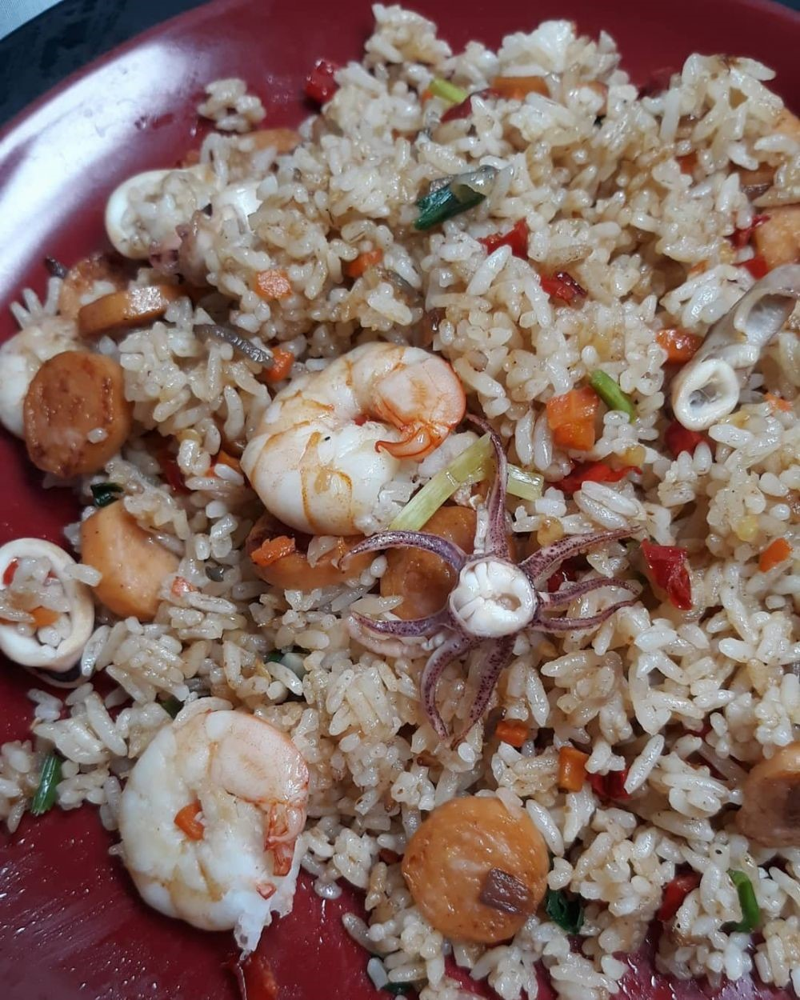

Goal: How to make homemade Seafood fried rice

Material
- Ingridients:
- 1 bowl of cold rice
- 10 large prawns (squeeze lime juice and wash)
- 5 large squid (cut into rings, give a squeeze of lime juice, leave for 30 minutes, then wash)
- 1 carrot (cut into small pieces)
- 2 large sausages (cut into small pieces)
- Blueband
- sliced 3 garlic
- sliced 5 red onions
- sliced 8 red chilies
- 1 scallion
- salt to taste
- Pepper powder to taste
- oyster sauce to taste
- Utensil:
- Skillet
- Spoon
- Fork
- Spatula
- Knife
Step
- Sauté the sliced spices except the scallions.
- Add carrots and sausage.
- Add shrimp and squid.
- Enter the complementary seasoning.
- Add rice, mix well, and cook until cooked.
- Add the scallions, mix well.